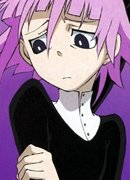
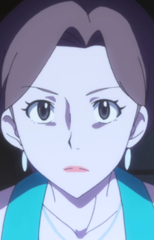
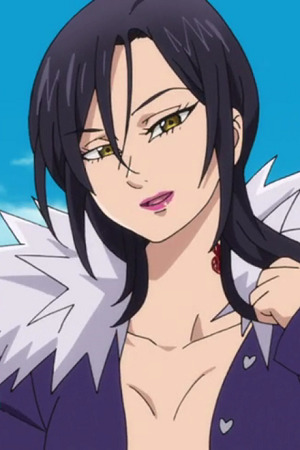

|
Ciel Phantomhive |
- Black Butler
- Black Butler Recap
- Black Butler: His Bulter, Performer
- Black Butler 2
- Black Butler 2 Specials
- Black Butler Picture Drama
- Black Butler: Book of Circus
- Black Butler: Book of Murder
- Black Butler: Book of the Altantic
|
Ciel Phantomhive is current head of Phantomhive house and the notorious Queen's Watchdog. Ciel is on arrogant and shrewd boy, with numerous exalted positions. He is business-savvy and run the family company after his parents death. |
|  |
Crona |
|
Crona is Ragnarok's meister. Crona is a very naive and submissive person who is pestered by Ragnarok. Crona does not like to fight. |
|  |
Gabby |
|
Gabby is an interviewer from the Hoenn region. She is partnered with Ty, her camera man. |
 |
Jeanne D'Arc |
|
Jeanne D'Arc or Ruler is the Strandard-Bearer who correctly guides the Holy Grail War. She is a servant of the Ruler class and a special Heroic Spirit summoned by the Holy Grail itself to act as the administrator of the Holy Grail War. She has the memories of each game. Ruler is a taciturn and cool girl when acting as a servant, but her natural self is a pain and quiet 16 years old year. |
 |
Leonardo da Vinci |
- Fate/Grand Order: Absolute Demonic Front - Babylonia - Initium Iter
- Fate/Grand Order: Absolute Demonic Front - Babylonia
|
Leonardo da Vinci is a Caster-class Servant that was summoned to Chaldea Security Organization. She is a Special Honorary Advisor of Chaldea's Tech Divison. She is rational, but placid. She is a genius who can grasps one's abilities with merely at a glance. While extremely intelligent, da Vinci is humble and kind to those around her. However, she is willing to boast of her greatness when reasonably. She is able to handle grave matters. She possesses a great affection for birds and subjects realated to them. |
 |
Mana Nakiri |
- Food Wars! The Fifth Plate
|
Mana Nakiri is the current Bookmaster of WGO, the wife of Azami Nakiri and the biological mother of Erina Nakiri. She has been shown to have an obsession towards Superhuman Abilities. She has a cold demeanor, refusing to show any emotion. She haves a very stand-out personality. Mana has a severe culinary obession, one that seek to find new forms of food that can satisfy her, with unhealthy levels of fanaticism. |
| |
Marielle |
|
Marielle is a witch and a part of an unknown coven. She is around 200 to 300 years old. |
|  |
Merlin |
- The Seven Deadly Sins
- The Seven Deadly Sins OVA
- The Seven Deadly Sins: Signs of Holy War
- The Seven Deadly Sins: Revival of The Commandments
- The Seven Deadly Sins Movie: Prisoners of the Sky
- The Seven Deadly Sins: Wrath of the Gods
|
Merlin is a member of the Seven Deadly Sins. She represented the sin of gluttony. She regarded as greatest mage in Britannia. Her Sacred Treasure is the Morning Star Aldan, an orb with power Infinity. She is ver calm and passive woman, and never looses her cool. Merlin is described as very mysterious woman. |
| |
Tomoyo |
- Tsubasa Chronicle
- Tsubasa Chronicle The Movie: The Princess in the Birdcage Kingdom
- Tsubasa Chronicle 2nd Series
- Tsubasa Chronicle: Spring Thunder
|
Tomoyo is the princess of Nihon country who sends Kurogane on his quest. Tomoyo is intelligent, determind, enthusaistic, and selfless to a fault. She has the ability to cross dimensions and have visions of the future through her dreams. Tomoyo cares deeply about others and sacrifices her dreamser powers to keep the travelers safe. |